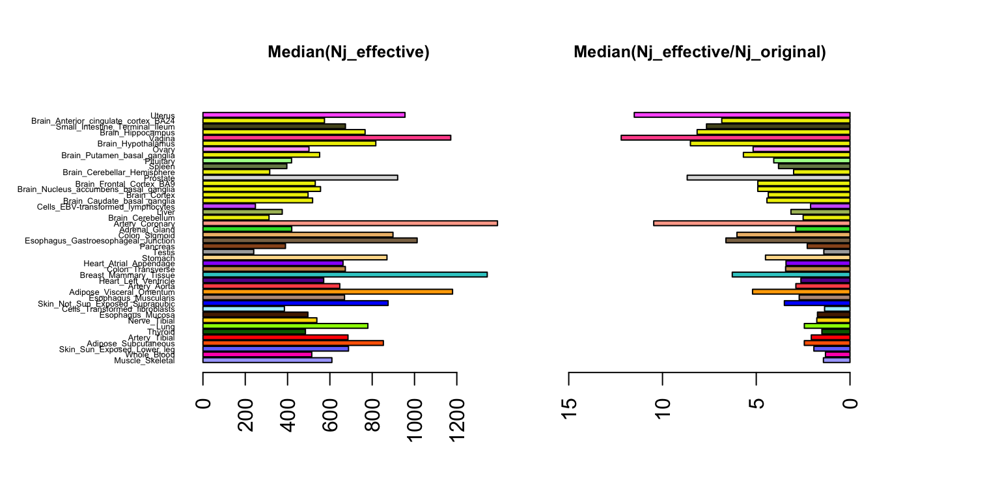
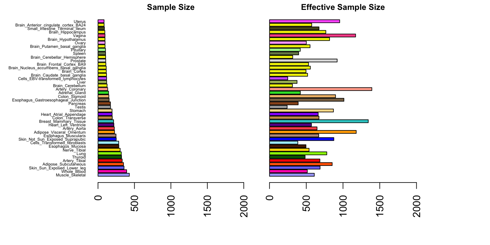

Last updated: 2018-06-06
workflowr checks: (Click a bullet for more information) ✔ R Markdown file: up-to-date
Great! Since the R Markdown file has been committed to the Git repository, you know the exact version of the code that produced these results.
✔ Environment: empty
Great job! The global environment was empty. Objects defined in the global environment can affect the analysis in your R Markdown file in unknown ways. For reproduciblity it’s best to always run the code in an empty environment.
✔ Seed:
set.seed(1)
The command set.seed(1) was run prior to running the code in the R Markdown file. Setting a seed ensures that any results that rely on randomness, e.g. subsampling or permutations, are reproducible.
✔ Session information: recorded
Great job! Recording the operating system, R version, and package versions is critical for reproducibility.
✔ Repository version: 5d5a403
wflow_publish or wflow_git_commit). workflowr only checks the R Markdown file, but you know if there are other scripts or data files that it depends on. Below is the status of the Git repository when the results were generated:
Ignored files:
Ignored: .sos/
Ignored: data/.sos/
Ignored: output/MatrixEQTLSumStats.Portable.Z.coved.K3.P3.lite.single.expanded.V1.loglik.rds
Ignored: workflows/.ipynb_checkpoints/
Ignored: workflows/.sos/
Untracked files:
Untracked: fastqtl_to_mash_output/
Untracked: gtex6_workflow_output/
| File | Version | Author | Date | Message |
|---|---|---|---|---|
| Rmd | dae0caf | Peter Carbonetto | 2018-06-06 | Renamed Tspecific analysis. |
| html | d2a04cf | Peter Carbonetto | 2018-06-06 | I’ve completed a rewrite of the “tissue effective sample sizes” |
| Rmd | 680e18c | Peter Carbonetto | 2018-06-06 | wflow_publish(“SampleSize.Rmd”) |
| html | 6d8379d | Peter Carbonetto | 2018-06-06 | Re-built revised SampleSize page. |
| Rmd | 32c92c7 | Peter Carbonetto | 2018-06-06 | wflow_publish(“SampleSize.Rmd”) |
| Rmd | 4eb658f | Peter Carbonetto | 2018-06-06 | Code in SampleSize.Rmd now runs successfully; need to polish it up. |
| html | afc401f | Peter Carbonetto | 2017-09-20 | Moved doc to docs. |
| Rmd | e1e48df | Peter Carbonetto | 2017-09-20 | Reorganized many of the files. |
Different levels of effect sharing among tissues means that effect estimates in some tissues gain more precision than others from the joint analysis. Here we quantify an “effective sample size” (ESS) per tissue and compare against the actual sample sizes.
Compare the last plot, at the bottom of this page, against Supplementary Figure 1 in the manuscript.
Load some of the results generated from the mas analysis of the GTEx data, as well as summary statistics (e.g., sample sizes, standard errors) calculated from the raw GTEx data.
missing.tissues <- c(7,8,19,20,24,25,31,34,37)
out <- readRDS("../data/MatrixEQTLSumStats.Portable.Z.rds")
maxz <- out$test.z
maxbeta <- out$test.b
qtl.names <- sapply(1:length(rownames(maxz)),
function(x) unlist(strsplit(rownames(maxz)[x],"[_]"))[[1]])
standard.error.from.z <- as.matrix(maxbeta/maxz)
dat <- read.csv("../data/ExprSampleSize.csv.gz",header = TRUE)
rownames(dat) <- dat[,1]
expr.data <- dat[,-1]
expr.sort <- expr.data[rownames(expr.data)%in%qtl.names,]
a <- match(qtl.names,rownames(expr.sort))
expr.sort <- expr.sort[a,]
exp.sort <- expr.sort[,-missing.tissues]
colnames(exp.sort) <- colnames(maxz)
standard.error <- out$test.s
colnames(standard.error) <- colnames(maxz)
tissue.names <- colnames(maxz)To draw the the bar charts, we use the colours that are used by convention used to represent the GTEx tissues in plots.
gtex.colors <- read.table('../data/GTExColors.txt',sep = '\t',
comment.char = '')[-missing.tissues,2]Load the marginal posterior variances.
out <- readRDS(paste("../output/MatrixEQTLSumStats.Portable.Z.coved.K3.P3",
"lite.single.expanded.V1.posterior.rds",sep = "."))
marginal.var <- out$marginal.varCompute the effective sample sizes,
\[n_{jeff} = \frac{s_{j}^2}{\tilde{s_{j}^2}}\]
original.var <- as.matrix(standard.error.from.z)^2
size <- as.matrix(exp.sort)
post.var <- as.matrix(marginal.var) * standard.error.from.z^2
njeffective <- size * original.var/post.var
increase <- njeffective/sizeNext, order the tissues by the actual sample size.
samplesize <- apply(size,2,unique)
sampleorder <- order(samplesize,decreasing = TRUE)
median.nj.effective <- apply(njeffective,2,median)
median.nj.increase <- apply(increase,2,median)Plot, for each tissue, the effective sample size, and the increase in the ESS over the actual sample sample size.
par(mfrow=c(1,2))
par(mar=c(5.1,8,4.1,0.1))
barplot(median.nj.effective[sampleorder],cex.names=0.4,las=2,
col=as.character(gtex.colors[sampleorder]),horiz = TRUE)
title("Median(Nj_effective)",cex.main = 0.8)
par(mar=c(5.1,2,4.1,6))
barplot(median.nj.increase[sampleorder],cex.names=0.4,las=2,
col=as.character(gtex.colors[sampleorder]),horiz = T,names="",xlim=c(16,0))
title("Median(Nj_effective/Nj_original)",cex.main=0.8)
| Version | Author | Date |
|---|---|---|
| d2a04cf | Peter Carbonetto | 2018-06-06 |
| 6d8379d | Peter Carbonetto | 2018-06-06 |
We see that the ESS values are smallest for tissue that show more “tissue-specific” behaviour (e.g. testis, whole blood), and are largest for coronary artery, reflecting its stronger correlation with other tissues.
Here we plot the actual sample size and median effective sample size of each tissue, in which the tissues are ordered by their original sample size.
par(mfrow = c(1,2))
par(mar = c(5.1,8,1.1,0.1))
barplot(samplesize[sampleorder],cex.names=0.4,las=2,
col=as.character(gtex.colors[sampleorder]),horiz = TRUE,
xlim = c(0,2000))
title("Sample Size",cex.main=0.8)
par(mar = c(5.1,2,1.1,6))
barplot(median.nj.effective[sampleorder],cex.names = 0.4,las = 2,
col = as.character(gtex.colors[sampleorder]),horiz = TRUE,
names = "",xlim = c(0,2000))
title("Effective Sample Size",cex.main = 0.8)
| Version | Author | Date |
|---|---|---|
| d2a04cf | Peter Carbonetto | 2018-06-06 |
| 6d8379d | Peter Carbonetto | 2018-06-06 |
Observe that the effective sample sizes are consistently higher than actual sample sizes, primarily due to sharing of information among tissues.
sessionInfo()
# R version 3.4.3 (2017-11-30)
# Platform: x86_64-apple-darwin15.6.0 (64-bit)
# Running under: macOS High Sierra 10.13.4
#
# Matrix products: default
# BLAS: /Library/Frameworks/R.framework/Versions/3.4/Resources/lib/libRblas.0.dylib
# LAPACK: /Library/Frameworks/R.framework/Versions/3.4/Resources/lib/libRlapack.dylib
#
# locale:
# [1] en_US.UTF-8/en_US.UTF-8/en_US.UTF-8/C/en_US.UTF-8/en_US.UTF-8
#
# attached base packages:
# [1] stats graphics grDevices utils datasets methods base
#
# loaded via a namespace (and not attached):
# [1] workflowr_1.0.1.9000 Rcpp_0.12.16 digest_0.6.15
# [4] rprojroot_1.3-2 R.methodsS3_1.7.1 backports_1.1.2
# [7] git2r_0.21.0 magrittr_1.5 evaluate_0.10.1
# [10] stringi_1.1.7 whisker_0.3-2 R.oo_1.21.0
# [13] R.utils_2.6.0 rmarkdown_1.9 tools_3.4.3
# [16] stringr_1.3.0 yaml_2.1.18 compiler_3.4.3
# [19] htmltools_0.3.6 knitr_1.20This reproducible R Markdown analysis was created with workflowr 1.0.1.9000